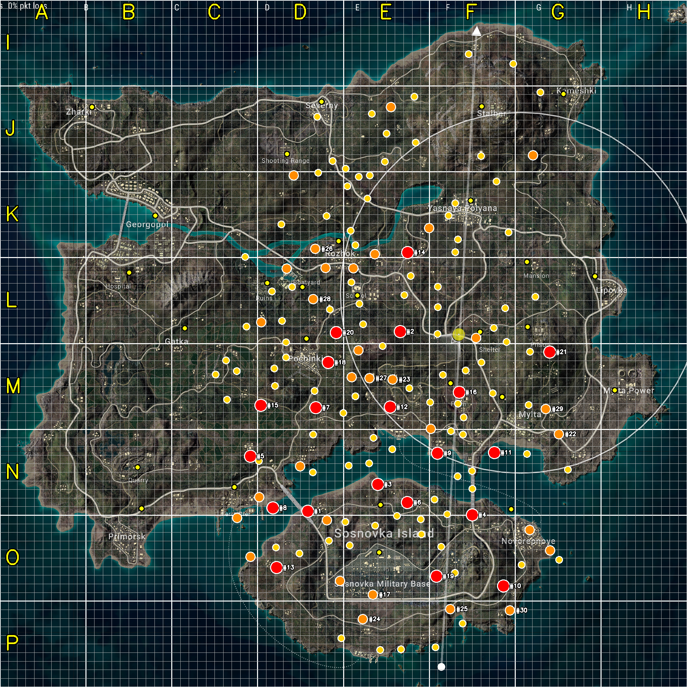

| # | 좌표 | 마커 | 매치 | 영상 | tier | 가까운 도시 | 거리 |
|---|---|---|---|---|---|---|---|
| 1 | (0.448,0.744) | 541 | 74 | 26 | S | SosnovkaIsl | 851m |
| 2 | (0.583,0.483) | 416 | 75 | 23 | S | School | 654m |
| 3 | (0.550,0.705) | 317 | 77 | 27 | S | SosnovkaIsl | 241m |
| 4 | (0.688,0.750) | 364 | 64 | 21 | S | Novorepnoye | 456m |
| 5 | (0.365,0.664) | 405 | 60 | 18 | S | Ferry | 406m |
| 6 | (0.593,0.732) | 339 | 47 | 19 | S | SosnovkaIsl | 314m |
| 7 | (0.460,0.594) | 190 | 52 | 17 | S | Pochinki | 812m |
| 8 | (0.397,0.739) | 303 | 38 | 14 | S | Ferry | 513m |
| 9 | (0.637,0.660) | 176 | 47 | 22 | S | Farm | 829m |
| 10 | (0.733,0.853) | 157 | 43 | 17 | S | Novorepnoye | 902m |
| 11 | (0.720,0.659) | 201 | 36 | 13 | S | Mylta | 651m |
| 12 | (0.568,0.593) | 142 | 42 | 17 | S | Farm | 754m |
| 13 | (0.403,0.826) | 262 | 30 | 8 | S | Ferry | 1057m |
| 14 | (0.593,0.368) | 107 | 41 | 19 | S | School | 771m |
| 15 | (0.380,0.590) | 108 | 40 | 16 | S | Pochinki | 941m |
| 16 | (0.669,0.571) | 100 | 39 | 21 | S | Farm | 146m |
| 17 | (0.543,0.866) | 177 | 28 | 13 | A | MilBase | 498m |
| 18 | (0.478,0.527) | 90 | 34 | 18 | S | Pochinki | 375m |
| 19 | (0.635,0.839) | 90 | 30 | 12 | S | MilBase | 721m |
| 20 | (0.490,0.484) | 82 | 31 | 18 | S | Pochinki | 355m |
| 21 | (0.800,0.512) | 75 | 30 | 16 | S | Prison | 387m |
| 22 | (0.813,0.632) | 87 | 25 | 14 | A | Mylta | 789m |
| 23 | (0.571,0.553) | 74 | 26 | 15 | A | Farm | 679m |
| 24 | (0.528,0.901) | 68 | 26 | 13 | A | MilBase | 802m |
| 25 | (0.655,0.887) | 147 | 17 | 3 | A | MilBase | 1058m |